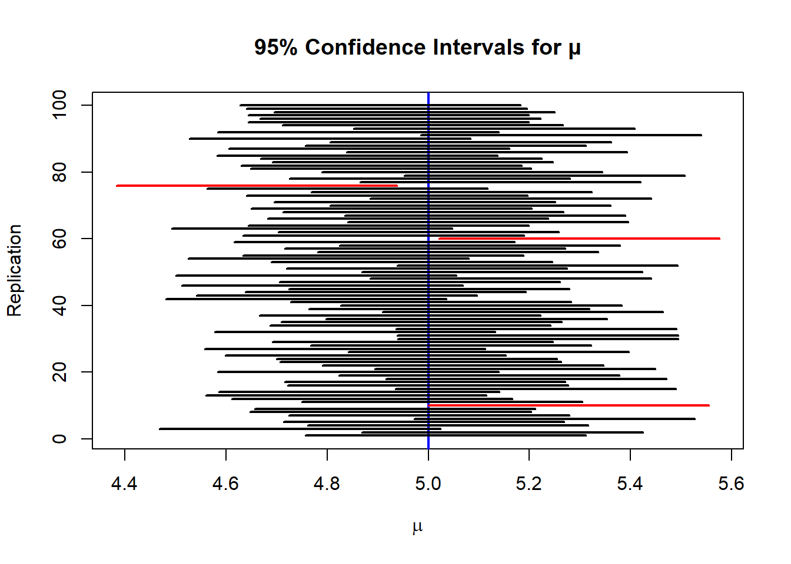

Let \(\theta\) be the unknown state variable: \[
\theta =
\begin{cases}
1 & \text{Max has COVID-19}, \\
0 & \text{Max does not have COVID-19}.
\end{cases}
\]
The doctor’s prior belief based on background knowledge \(H\) is: \[
P(\theta = 1 \mid H) = 0.7, \qquad P(\theta = 0 \mid H) = 0.3.
\]
The PCR test result is denoted by: \[
X =
\begin{cases}
1 & \text{positive test}, \\
0 & \text{negative test}.
\end{cases}
\]
(c) Has the probability that Max has COVID-19 increased?
The prior probability was: \[
P(\theta = 1 \mid H) = 0.7.
\]
The posterior probability after observing a positive test is: \[
P(\theta = 1 \mid X = 1) \approx 0.847.
\]
Since \[
P(\theta = 1 \mid X = 1) > P(\theta = 1 \mid H),
\] the probability that Max has COVID-19 has increased.
This happens because a positive test result is much more likely when Max has COVID-19 than when he does not, so the observation provides evidence in favor of the disease.
Task 2
From Question 1, the posterior distribution after the first positive test \(X_1 = 1\) is: \[
P(\theta = 1 \mid X_1 = 1) \approx 0.847,
\qquad
P(\theta = 0 \mid X_1 = 1) \approx 0.153.
\]
The second test \(X_2\) has the following characteristics: \[
P(X_2 = 1 \mid \theta = 1) = 0.99,
\]\[
P(X_2 = 1 \mid \theta = 0) = 0.04.
\]
(a)
We compute the conditional probability of a positive second test using the law of total probability: \[
P(X_2 = 1 \mid X_1 = 1)
= P(X_2 = 1 \mid \theta = 1) P(\theta = 1 \mid X_1 = 1)
+ P(X_2 = 1 \mid \theta = 0) P(\theta = 0 \mid X_1 = 1).
\]
Thus, the probability of a negative second test result is: \[
P(X_2 = 0 \mid X_1 = 1)
= 1 - P(X_2 = 1 \mid X_1 = 1)
= 1 - 0.8446
= 0.1554.
\]
So the conditional distribution of \(X_2\) given \(X_1 = 1\) is: \[
X_2 \mid X_1 = 1 \sim
\begin{cases}
1 & \text{with probability } 0.8446, \\
0 & \text{with probability } 0.1554.
\end{cases}
\]
After a positive first test and a negative second test, the posterior distribution of \(\theta\) is: \[
\theta \mid (X_1 = 1, X_2 = 0) \sim
\begin{cases}
1 & \text{with probability } 0.055, \\
0 & \text{with probability } 0.945.
\end{cases}
\]
Despite the strong evidence from the first test, the highly accurate negative second test substantially reduces the probability that Max has COVID-19.
Task 3
Bob has three possible modes of transport to work: \[
T \in \{1,2,3\},
\] where:
\(T = 1\): car
\(T = 2\): bus
\(T = 3\): train
The probability that Bob is late depends on the mode of transport:
\[
P(L \mid T = 1) = 0.5,
\]\[
P(L \mid T = 2) = 0.2,
\]\[
P(L \mid T = 3) = 0.01,
\] where \(L\) denotes the event that Bob is late.
The line manager assigns equal prior probabilities to each transport mode: \[
P(T = 1) = P(T = 2) = P(T = 3) = \frac{1}{3}.
\]
Using the law of total probability: \[
P(L) = \sum_{t=1}^{3} P(L \mid T = t)\, P(T = t).
\]
The manager’s estimate of the probability that Bob came to work by car is: \[
P(T = 1 \mid L) \approx 0.704.
\]
This means that, given Bob was late, there is approximately a 70.4% probability that he traveled by car.
Task 4
a)
i)
set.seed(123) # for reproducibility# Parametersmu <-5sigma <-1# known standard deviationn <-50# sample size per replicationB <-100# number of replicationsz <-1.96# z-score for 95% CI# Storage for CI boundslower <-numeric(B)upper <-numeric(B)# Simulation loopfor (b in1:B) { x <-rnorm(n, mean = mu, sd = sigma) # generate 50 points xbar <-mean(x) # sample mean lower[b] <- xbar - z * sigma /sqrt(n) # lower bound of CI upper[b] <- xbar + z * sigma /sqrt(n) # upper bound of CI}# Combine resultsci <-cbind(mean(lower), mean(upper))ci
[,1] [,2]
[1,] 4.722245 5.276616
ii)
# Plot setupplot(NULL,xlim =c(min(lower), max(upper)), # x-axis spans all CIsylim =c(1, B), # y-axis for 100 replicationsxlab =expression(mu),ylab ="Replication",main ="95% Confidence Intervals for μ")# Draw horizontal line at true μabline(v = mu, lwd =2, col ="blue")# Loop to plot each CIfor (i in1:B) {col_i <-if (lower[i] <= mu & upper[i] >= mu) "black"else"red"segments(lower[i], i, upper[i], i, col = col_i, lwd =2)}

b)
ii)
“If you conduct your experiment 100 times and construct 95% confidence interval in each of them, it is expected that 95 confidence intervals out of these 100 would contain the true value”.